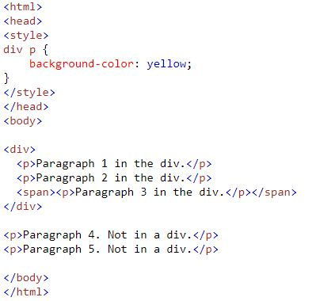
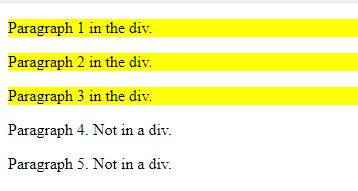
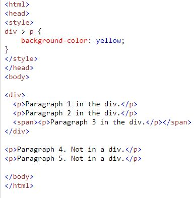
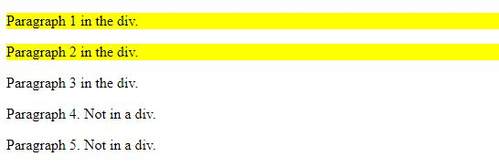
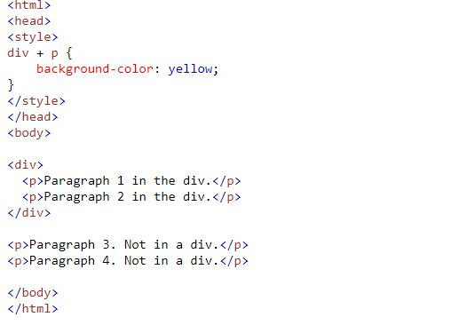
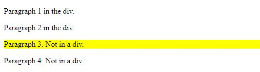
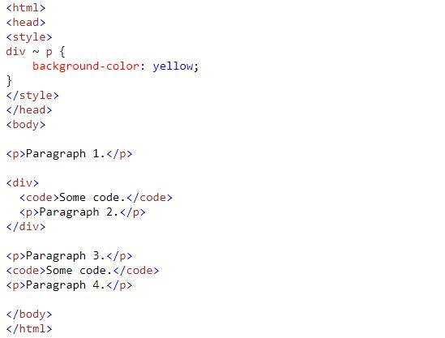
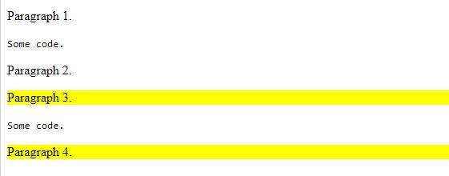

Um combinador é algo que explica a relação entre os seletores. Há 4 tipos de seletores!
Todos dentro do DIV. Exemplo:
Resultado:
Todos dentro do DIV com Exessão o que estar com SPAN. Exemplo:
Resultado:
Seleciona o mais perto fora do div. Exemplo:
Resultado:
Todos os elementos que são irmãos de um elemento especificado. Exemplo:
Resultado:
